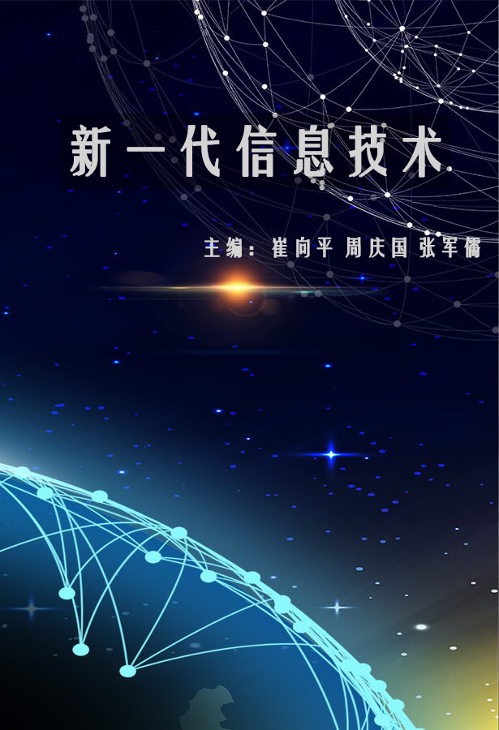

精选课程
新一代信息技术
课程简介
数字化、网络化、智能化是新一轮科技革命的突出特征，也是新一代信息技术的核心。2018年两院院士大会上提到：“世界正在进入以信息产业为主导的经济发展时期。我们要把握数字化、网络化、智能化融合发展的契机，以信息化、智能化为杠杆培育新动能。”近年来以大数据、云计算、人工智能等为首的新一代信息技术重塑着社会各个领域的发展和布局，对人们的工作、生活、学习和文化传播方式也产生了积极影响。本书主要介绍大数据、云计算、物联网、人工智能等新一代信息技术的概念、特点、应用现状及未来发展趋势。
